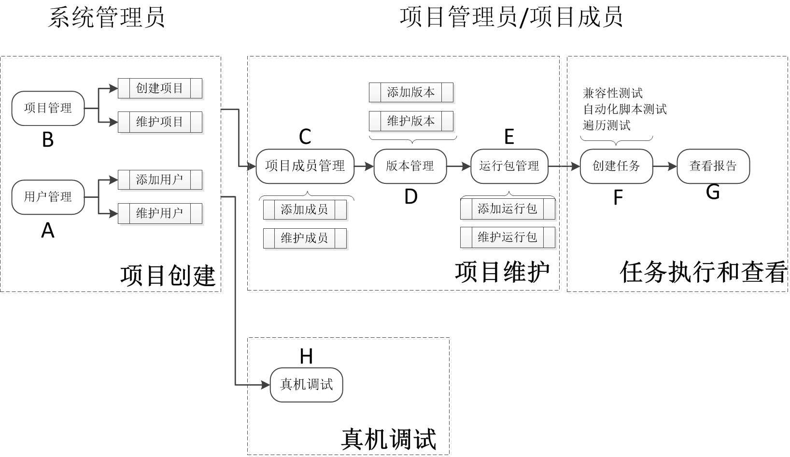
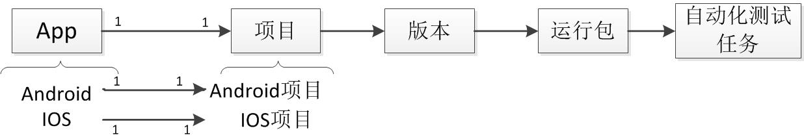

2.1 典型业务场景
本系统提供一站式完成功能测试，兼容性测试，可靠性测试等服务，涉及的典型业务场景主要包括：项目创建、项目维护，任务执行和查看，以及真机调试，如下图所示。每个场景由一个或多个业务业务操作组成，分别由不同的用户角色来实现和执行。

锐测盒子典型业务场景图
(1) 用户角色和身份
系统管理员拥有业务操作 A和B的权限，普通员工无此权限。系统管理员通过A添加系统用户，然后通过B在新增项目时关联该项目的项目管理员。项目管理员通过C添加和编辑项目管理员和项目成员。有关用户权限的描述详情参见“用户权限”章节。
(2) 业务场景和操作
| 业务场景 | 业务操作 | 前置条件 | 用户角色/身份 | 操作结果 |
|---|---|---|---|---|
| 项目创建 | A用户管理 |
系统管理员登录 |
系统管理员 |
添加系统用户（普通员工/系统管理员）； |
B项目管理 |
系统管理员登录 |
系统管理员 |
创建新项目；关联项目管理员 |
|
| 项目维护 | C项目成员管理 |
A, B |
项目管理员 |
添加/修改项目管理员和项目成员，方便更多用户参加项目； |
D版本管理 |
A, B, C |
项目管理员；项目成员 |
创建和维护版本；为管理运行包提供基础； |
|
E运行包管理 |
C, D |
项目管理员；项目成员 |
创建和维护运行包；为创建测试任务提供App； |
|
| 任务执行和查看 | F创建任务 |
D, E |
项目管理员；项目成员 |
使用E业务上传的App，进行兼容性、自动化脚本和遍历测试； |
G查看报告 |
F |
项目管理员；项目成员 |
查看F提交的任务执行结果和对测试结果的分析报告 |
|
| 真机调试 | H真机调试 |
A |
系统管理员；普通员工 |
真机实测；复现bug； |
(3) 业务管理逻辑
自动化测试任务是分层级进行管理，从项目到版本再到运行包，对App测试统一化管理。一般来讲，对应每一款App的测试，需要创建相应的项目来管理，根据App所运行平台，项目类别分为Android或IOS，如图下图所示。

锐测盒子任务管理逻辑图
后面将具体介绍各个典型业务场景的具体流程，用户可以比较容易的参照完成相应的工作